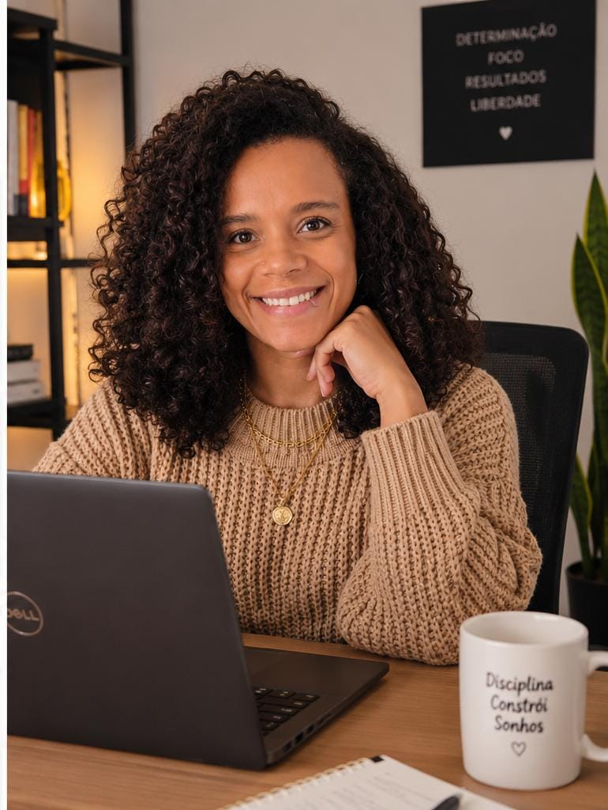
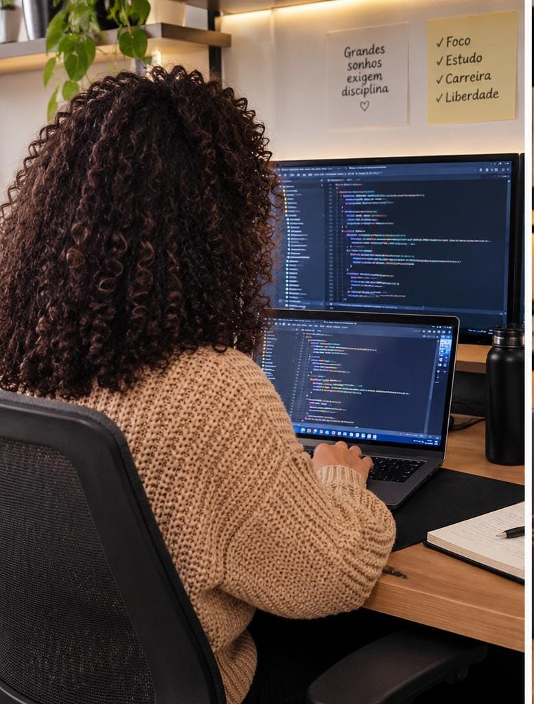

Backend • APIs • Integrações
Oi, eu sou
Oi, eu sou
Jullyen.
Transformo problemas complexos em soluções que conectam sistemas. Desenvolvedora com foco em Python, Java, APIs REST e integrações corporativas.

Construindo
com propósito ✦
com propósito ✦
✳ Python
✳ Java
✳ APIs REST
✳ SQL
✳ Integrações
Curiosa por natureza.
Dev por escolha.
Gosto de entender como as peças se conectam: pessoas, sistemas e ideias.
Minha trajetória passou pela Engenharia Civil antes de chegar à tecnologia. Essa mudança fortaleceu minha capacidade de analisar problemas, planejar soluções e aprender continuamente.
Tenho experiência com desenvolvimento backend, sustentação de aplicações e integração de sistemas. Trabalho com APIs REST, análise de logs, consultas SQL, testes de APIs e publicação de aplicações em diferentes ambientes.
Também exploro automação e inteligência artificial para simplificar processos e conectar soluções de forma eficiente.
Python
Java
Spring Boot
FastAPI
Flask
REST / JSON / SOAP
SQL Server
MySQL
Git
Linux
Integrações
IA e automação
Projetos em destaque.
Projetos e estudos que demonstram minha experiência com desenvolvimento, APIs e automação.
Chuks Garage System
Sistema para oficina com registro de veículos, checklist de entrada, fotografias e preparação de relatório para assinatura digital.
Ver repositório ↗GatewayConnect
Projeto de estudo para praticar autenticação, rotas protegidas e acesso a dados em uma API inspirada em cenários de integração com ServiceNow.
Explorar no GitHub ↗Automação e integrações
Estudos com automação de tarefas, consumo de APIs e uso de inteligência artificial para apoiar processos e reduzir atividades repetitivas.
Ver projetos no GitHub ↗
Construindo ideias.
Um passo de cada vez.
Tecnologia também é curiosidade, dedicação e espaço para experimentar. Aqui, um pouco do meu universo.
Entre linhas de código e ideias
Aprender, construir e evoluir.

Minha trajetória, minhas escolhas
Da Engenharia Civil ao desenvolvimento backend.
Vamos conversar?
Tem um desafio
Tem um desafio
interessante?
Estou aberta a oportunidades em desenvolvimento backend, APIs REST e integração de sistemas. Vamos construir algo legal?